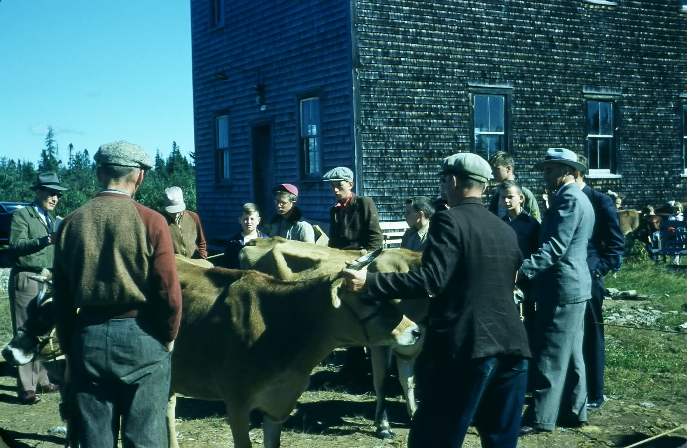
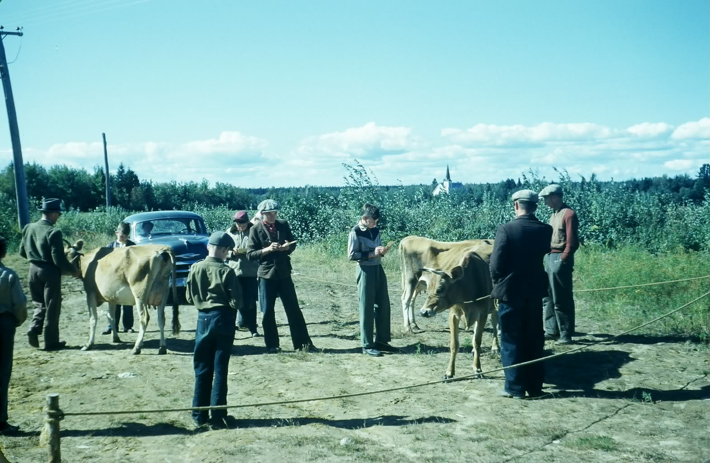

The Family Chronicle
No. 117 May 4,2006
____________________________________________________________________


Undated photo of cattle judging show at Black River Community Hall
This the only photo I have seen of the Hall before the 1967 renovations.
(Glendenning collection)
Follow-up
Donald Edge sent the following follow-up note about aprons:
“Aprons have been around for a very long time. Initially they were uni-sex:
Adam’s and Eve’s eyes “were opened, and they knew that they were naked: and they sewed the leaves together, and made themselves aprons” (Genesis 3:7).
Curiously, the word apron does not appear in the Index and Concordance to the King James Bible.
Lots of men wore aprons—farriers, glassblowers, and the like, but for most of history. aprons were worn by certain women. The upper classes of course did not wear them (although some of their servants did). But then the upper classes didn’t use an apron to flap at an aggressive farmyard rooster, or to wave in the air to signal someone working out in a field. Until about thirty years ago, practically every advertisement for kitchen appliances and household scenes featured an elegant slender woman wearing an apron as proof of domestic cleanliness and industriousness.
We now live in an age of message aprons (“Kiss the Cook”), and in my experience, more men wear aprons these days, especially when it’s barbecue time, and most of these aprons also have messages (“She Didn’t Marry Me for My Cooking”).
When I think of my grandmother, Elspeth MacNaughton, I see her in a apron that had no messages written on it. Grandmothers didn’t need messages. In their plain aprons, they were pictures of order and comfort and stability and decency, the royalty of the Black River community I knew as a boy.”
India Rubber Ball
A friend’s reference today to an “Indian rubber ball” reminded me that wealso had one at our house. I recall it being red and brother Ken remembers that it had great elasticity. It would bounce much, much higher than any others. I am not certain of the significance but believe that it had to do with both the use of natural rather and the manufacturing process. I also remember “gutta percha” tires but do not know the significance of the term.
Glendenning Brook
In my reading recently I encountered a reference to Glendenning Brook in northern Maine. I checked the web site and it does exist but I found nothing about its origins. Does anyone know the origin of the name?
The Family Chronicle (Copyright) is an occasional newsletter published by Don Glendenning and posted on the family website. It is intended to share information about my family, community and the times in which I grew up. While every effort is made to be accurate, errors are likely to occur. Comments, enquiries and information may be sent to 62 Queen Elizabeth Drive, Charlottetown, PEI, C1A 3A9. Tel: 902 892 5859. Email: dglende@auracom.com Web: www.glendenning.net/don